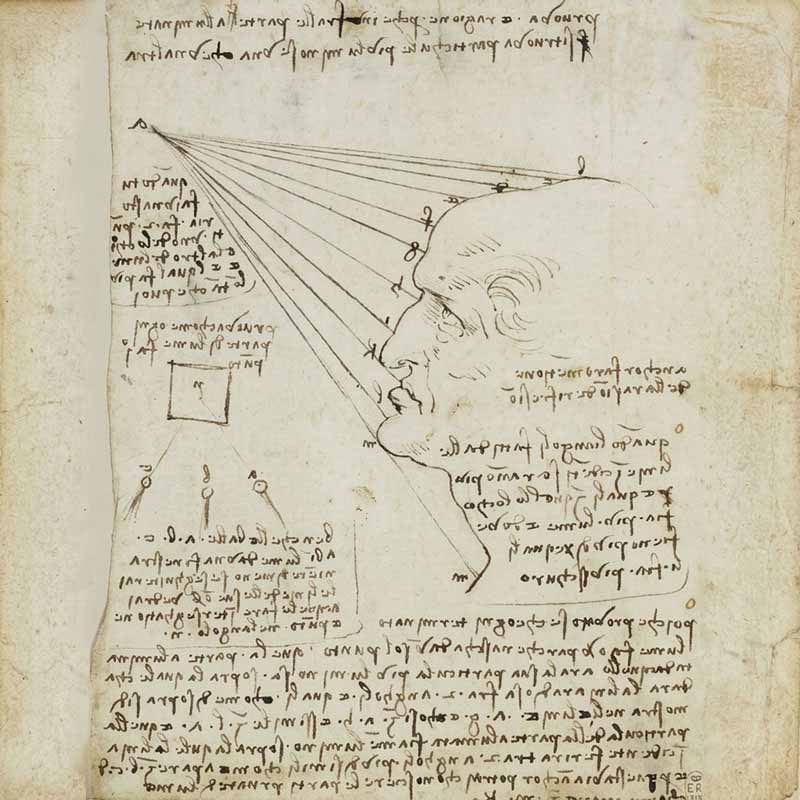
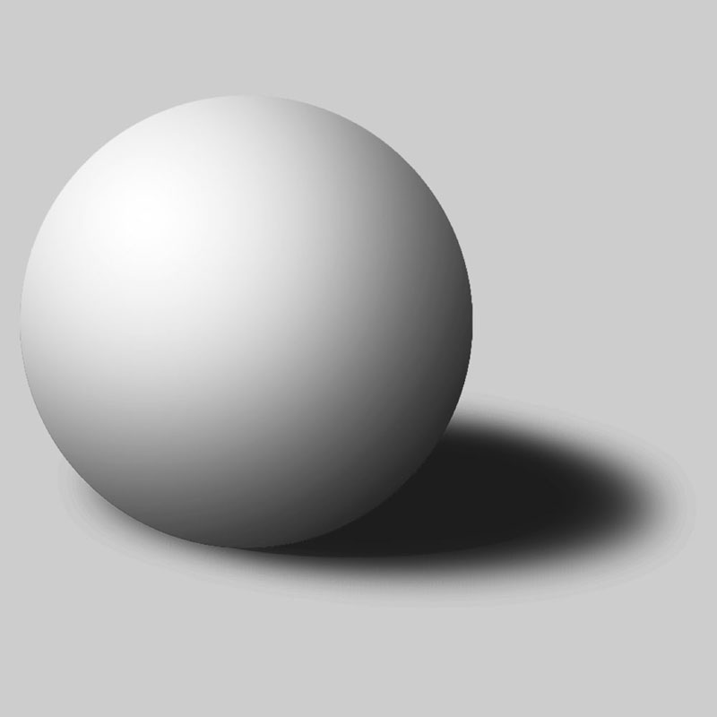
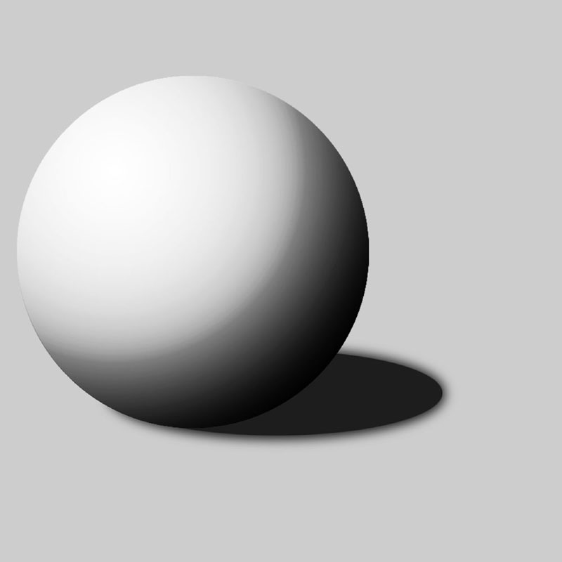
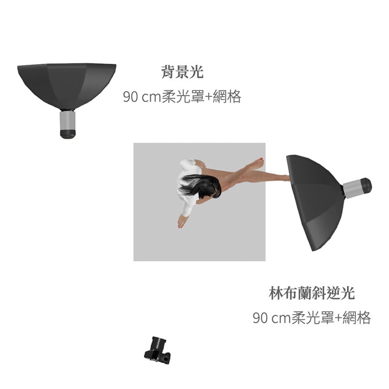
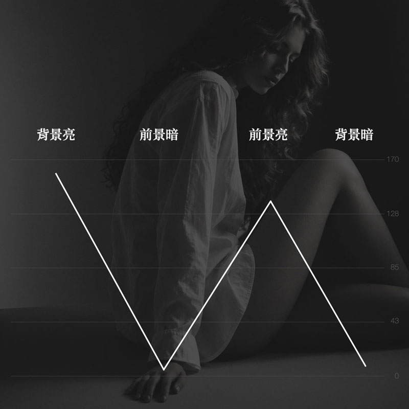

01

燈位判斷
文藝復興時期的科學家和畫家最早發現光與影之間的幾何關係，達文西手稿裡就有這套邏輯。參考圖中人物左邊暗，代表主光從右邊來，背景右邊暗，代表背景光從左邊來。要看光線從哪裡來? 要先找到影子和暗部。
梵谷晚年在精神病院裡，反覆臨摹米勒的版畫，他形容那不是複製，而是把黑白的光影翻譯成色彩的語言。臨摹，是藝術學習裡最古老的方法。我選擇這張影像當作燈光拆解的案例，是因為它用光極其簡潔，階調又極其豐富。

文藝復興時期的科學家和畫家最早發現光與影之間的幾何關係，達文西手稿裡就有這套邏輯。參考圖中人物左邊暗，代表主光從右邊來，背景右邊暗，代表背景光從左邊來。要看光線從哪裡來? 要先找到影子和暗部。


面光源會造成柔和的中間調過渡，點光源會造成亮部到暗部快速的轉折。由參考圖可以判斷使用的是面光源，而柔光罩搭配蜂巢網格可以同時做到柔光，又把照明範圍收在需要的地方，不會整個場景都亮。

課程中我會要求同學練習把判斷好的燈位，控光配件，亮暗部濃度與光比, 繪製成佈光設計圖，並實際在攝影棚中拍攝出來，一方面檢驗自己的判斷是否正確，二方面在實拍現場學習處理設計圖上看不到的環境或物理限制。

畫面的明暗節奏是左背景亮→左前景暗→右前景亮→右背景暗，這種階調交替會在視覺上產生韻律感。同時漸層的背景讓平面產生空間感，而前景的階調變化則讓人物產生立體感。
攝影: James
模特: 小妤
場地: 333攝影棚B棚